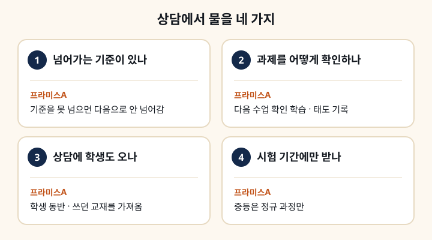

다음 단계로 넘어가는 기준이 있나요?
진도표만 있고 넘어가는 기준이 없으면, 모르는 부분이 쌓인 채 다음 단원으로 갑니다. 기준이 있다는 답을 들으셨다면 못 넘었을 때 무엇을 하는지까지 물어보셔야 합니다. 다른 곳은 벌써 중등 문법을 나간다는 이야기에 마음이 급해질 때도 이 질문이 잣대가 됩니다.
저희는 배운 내용을 그 자리에서 확인하고, 기준을 넘지 못하면 다음으로 넘어가지 않습니다. 진도보다 체킹입니다. 한 번 배운 것을 단어 → 문장 → 글 → 쓰기로 다시 만나게 하는 다지기 학습이 기본입니다.
과제는 누가 어떻게 확인하나요?
과제가 몇 장인지보다, 안 해 오면 어떻게 되는지를 물어보셔야 합니다. 해 온 과제를 다음 수업에서 어떻게 확인하는지가 그 답에 나옵니다. 확인하지 않는 과제는 안 해 가도 티가 나지 않습니다. 과제와 수업 태도를 기록하는지, 그 기록을 학부모에게 알려 주는지도 같이 물어보세요.
저희는 수업에서 배운 것을 집에서 한 번 더 확인하는 과제를 냅니다. 해 오지 않으면 다음 수업의 확인 학습에서 통과하기 어렵습니다. 초등 정규반은 주 3회 수업마다 지난 시간 단어와 문장을 확인하는 체킹으로 시작하고, 과제 수행과 수업 태도는 기록해 필요한 시점에 학부모님께 안내드립니다.
상담에 학생도 같이 가나요?
학부모님만 상담하시면 학생 상태는 전해 들은 것으로만 판단됩니다. 학생을 같이 오게 하는지, 쓰던 교재를 가져오게 하는지를 보시면 그 학원이 무엇을 근거로 반과 단계를 정하는지 알 수 있습니다. 레벨테스트를 언제 보는지도 이때 같이 물어보세요.
저희는 상담에 학생이 꼭 함께 와야 합니다. 지금까지 쓰던 교재와 공부한 것들을 가져오시면 좋습니다. 레벨테스트는 상담 전이 아니라 등록 후 첫날 수업에서 봅니다. 상담 신청 순서는 자주 묻는 질문에 있습니다.
시험 기간에만 받아 주나요?
중학생이라면 꼭 물어보셔야 합니다. 이 답에서 그 학원이 내신을 평소 수업으로 보는지, 시험 직전 몇 주로 보는지가 갈립니다. 아이가 평소에 혼자 범위를 따라가고 시험 직전 정리만 필요하다면 단기 수강을 받는 곳이 맞습니다. 평소부터 확인이 필요하다면 정규 과정만 받는 곳이 맞습니다.
저희 중등부는 정규 과정으로만 운영하고, 시험 기간에만 내신 대비를 따로 듣는 것은 받지 않습니다. 중등 내신반은 월·수·금 주 3회 오후 4시 시작 160분, 월 410,000원입니다. 이유는 시험 기간에만 다닐 수 있는지에 적었습니다.
이런 경우엔 안 맞습니다
학습태도가 아직 준비되지 않았다면 저희와는 맞지 않습니다. 저희는 면학 분위기를 엄격하게 지키고, 분위기를 흐리는 행동이 반복되면 함께 가기 어렵습니다. 중·고등 교실은 특히 조용한 집중이 필요합니다. 아이가 산만한 편이라면 그 정도가 어느 선인지는 상담에 학생과 함께 오셔서 직접 보는 편이 빠릅니다.
그냥 앉아만 있다 가는 곳을 찾는 경우, 진도를 빨리 나가 주기를 바라는 경우도 맞지 않습니다. 모르는 것을 확인받는 과정을 견딜 수 있고 기초부터 다시 다지고 싶은 학생이라면, 위 4가지 질문에 대한 저희 답을 커리큘럼·교재 안내와 상담 내용으로 다른 곳과 견줘 보시면 됩니다.